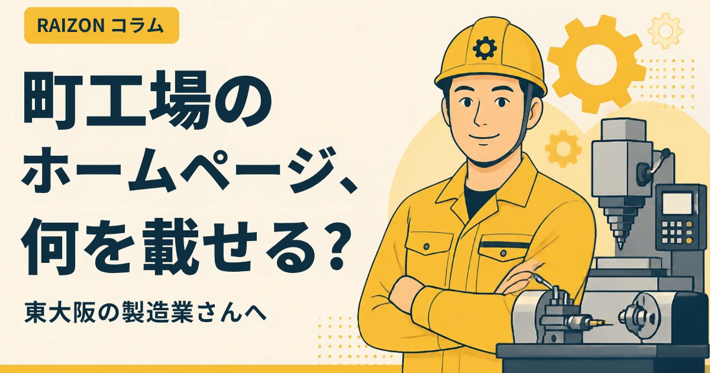
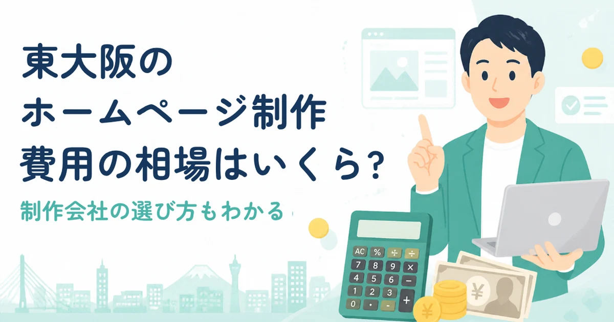

小阪・布施・八戸ノ里のお店のホームページ｜地域で見つけてもらう5つのコツ

小阪、布施、八戸ノ里、河内小阪。東大阪の駅まわりには、昔から続く商店や工場、新しく開業したお店が、たくさんあります。そうした地域のお店が、「近くで探している人」に見つけてもらうには、ホームページで、どんなことに気をつければよいのでしょうか。この記事では、地域で見つけてもらうためのコツを、5つに整理します。
- 探す人は、「地域名＋業種」で検索する。ホームページにも、地域名をはっきり書く
- ホームページとGoogleマップは、住所・電話・屋号を同じ表記にそろえる
- 「どこにあるか」「どう行くか」が伝わると、来店・問い合わせにつながりやすい
コツ1：地域名を、自然な形で入れる
お客様は、「小阪 整骨院」「布施 美容室」「八戸ノ里 飲食店」のように、地域名と業種を組み合わせて探します。トップページの見出しや、会社概要、アクセスの欄に、「東大阪市小阪」「布施駅の近く」といった言葉を、自然に入れましょう。同じ言葉を不自然に何度も並べると、かえって読みにくくなるので、注意してください。
コツ2：住所・電話・屋号を、Googleマップとそろえる
ホームページに書く住所や電話番号が、Googleマップの情報と少しでも違うと、お客様も検索エンジンも混乱します。「5丁目7-20」と「5-7-20」のような、細かい表記の違いも、そろえておくと安心です。詳しくは、ホームページとGoogleマップの関係をご覧ください。
| 場所 | そろえるもの |
|---|---|
| ホームページ | 屋号、住所、電話番号、営業時間 |
| Googleマップ（ビジネスプロフィール） | 同じ表記、同じ内容 |
| SNS・ポータルサイト | 同じ表記、同じ内容 |
コツ3：「どう行くか」を、書く
初めて来るお客様は、「駅から何分か」「駐車場はあるか」を気にします。最寄り駅（小阪駅、河内小阪駅、布施駅、八戸ノ里駅など）からの行き方や、目印になる建物、駐車場や駐輪場の有無を、アクセスの欄に書いておきましょう。地図を埋め込み、外観の写真を添えると、さらに迷いません。
コツ4：地域ならではの「お客様の声」や事例を載せる
「近所だから安心」「地元の会社に頼みたい」という方は、多くいます。お客様の許可をとったうえで、お客様の声や、仕事の事例を載せましょう。町工場さんなら、加工内容や設備の載せ方も参考になります。
コツ5：問い合わせの方法を、いくつか用意する
電話が得意な方、フォームが楽な方、LINEで気軽に聞きたい方など、お客様によって好みはさまざまです。電話・フォーム・LINEなど、連絡方法を複数用意し、営業時間や定休日も、見やすく載せておきましょう。
RAIZONでは
RAIZONは、東大阪市の下小阪を拠点に、地域の事業者さんのホームページを、月額制で制作しています。初期制作費は0円、月額9,800円（税抜）。月4回までの修正・更新が含まれ、最低契約期間はありません。ホームページを作れば必ずお客様が増える、とは言えませんが、地域で見つけてもらうための準備を、一緒に整えます。エリア別の案内は、小阪・布施・八戸ノ里・河内小阪のページをご覧ください。
よくある質問
地域名は、どれくらい入れればいいですか？
トップの見出し、会社概要、アクセスの欄に、自然に入っていれば十分です。同じ言葉を、無理に何度も入れる必要はありません。
小さなお店でも、ホームページは必要ですか？
必要です。Googleマップで見つけた方が、営業時間やメニュー、料金を確かめるために、ホームページを開くことが多いからです。
どこから始めればいいですか？
まずは、住所・電話・営業時間・写真を、そろえるところからです。お問い合わせフォームから、お気軽にご相談ください。
ほかのコラム

制作の基礎東大阪の町工場のホームページに載せたいこと7つ｜問い合わせにつながる作り方
東大阪の町工場・製造業がホームページを作るとき、取引先に伝えたい内容を7つに整理しました。加工内容・設備・実績の載せ方、写真の撮り方、問い合わせを増やす工夫までやさしく解説します。

料金・費用東大阪のホームページ制作の費用相場は？買い切り・月額の違いと見積もりの見方
東大阪でホームページ制作を頼むときの費用の目安を、買い切りと月額制に分けて解説します。見積もりで確認したい項目や、あとから費用が増えないためのチェックポイントもまとめました。
 制作の基礎
制作の基礎ホームページに載せる写真は何を撮る？スマホでできる撮り方のコツ｜東大阪の事業者さんへ
東大阪・大阪・奈良・京都でホームページを作る事業者さん向けに、載せたい写真の種類と、スマートフォンでもきれいに撮るコツを、やさしく解説します。プロのカメラマンがいなくても大丈夫です。